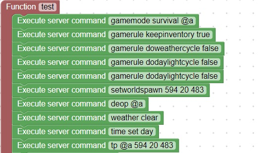

Starting commands
When you start your game you may want to customize the behavior of the game
.
Also setting the spawn point will help so the players don't get teleported after joining
Turning off the weather as well as setting the time of day will help make the game stable
Execute Server Command is located in World, Server
You will need to change the spawnpoint X Y Z values to match your game start location
